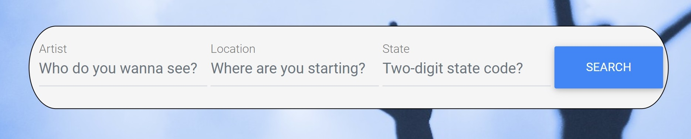
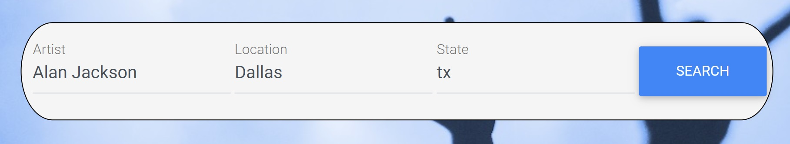
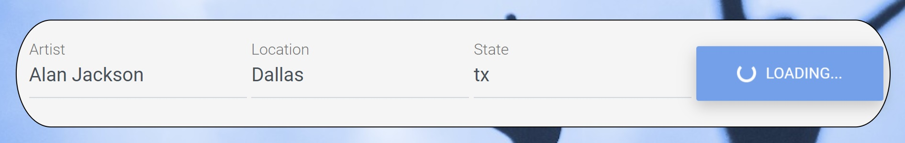
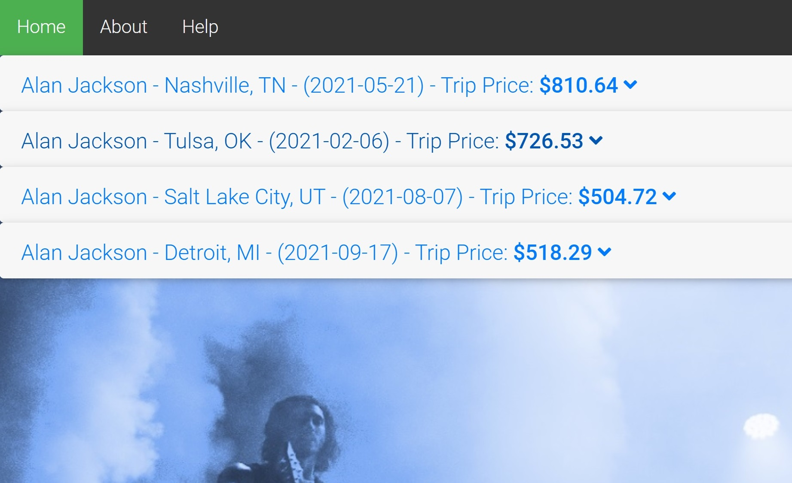
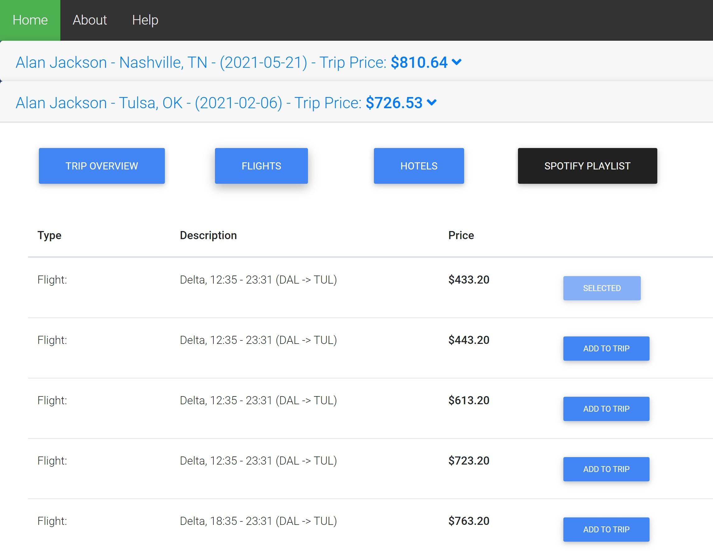
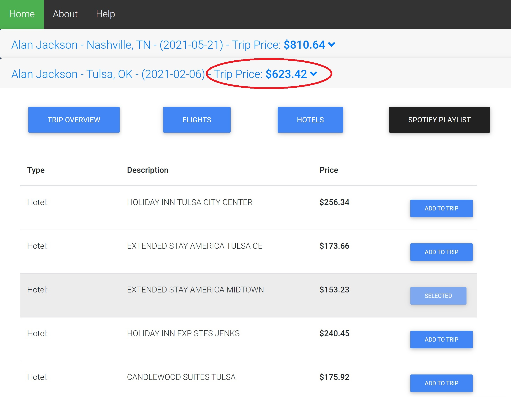

To find a concert from our home page, enter an artist, the location you start at (as a city), and that city's state (abbreviated as the two letter postal code). Then click search.
In the example below, we search for Alan Jackson concerts leaving from Dallas, Tx.
If loading takes a while, please be patient. If the page is claimed to be "unresponsive", please wait for it to load.
After waiting for it to load, you should see concert trip results. Browse through the results to find concerts you like. Expand the details for the trip by clicking the down arrow next to price.
If you want to edit the trip, click on the flights or hotel button to explore options. To choose a different hotel or flight than the default option, click "add to trip" next to an option. It will replace the previous selection.
Notice that when you replace a selected hotel or flight option, the trip price updates.
To get a Spotify playlist for the artist, just click the Spotify playlist button. You will be sent to Spotifiy.com and will see a relevant playlist.
We hope you found this page to be helpful!